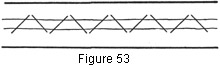

1930—Millinery Processes
by Carlotta M. Brown
FOLDS
Folds are strips of bias material used as a finish or a trimming. The fitted fold gives a tailored effect, and the soft fold a semi-tailored effect. The drooping fold, usually seen on the midsummer hat made of transparent material, makes a soft, fluffy brim finish. The millinery fold and the single fold may be attached either to the brim or at the base of the crown.
Fitted Fold
The fitted fold may have either a slip-stitch or a cord-edge finish.
Figure 50. Slip-stitching fold to brim edge. A, long stitch running inside of folded edge of fold; B, needle catching top or facing covering with small stitch.
Fitted fold with slip-stitch finish. Cut a bias strip 3 or 4 inches in width plus a quarter-inch seam allowance on each side. Proceed as when making a single-bias binding slip-stitched on both sides (Fig. 4).
Fitted fold with cord-edge finish. The same method is followed as described above until the edges are to be finished. These are turned over a wire, pinned, and sewed as for the cord-edge finish (Fig. 38). The top wire is sewed in place first, with the stitches going through to the facing side. The facing cord edge is finished with the stitches coming through the top of the brim, but hidden under the top wire.
Extreme precaution must be taken not to stretch the edges of the fold either when fitting or replacing the fold on the brim. The stretching is done through the center of the fold (Fig. 5).
Soft fold. Cut a bias strip 2½ or 3 inches in width plus two seam allowances. Proceed as in making the double-bias binding except that the edge of the soft fold is not slip-stitched to the brim covering but is left loose, standing slightly away from the brim.
If this fold is used on a transparent hat, it should be placed between the top and the facing.
Drooping Fold
This fold may be placed between the two brim coverings or on top of the finished brim, and finished with a decorative stitch or fold to cover the raw edges.
Fold placed between brim pieces. Cut, fit, and seam the bias strips as for the double-bias binding (Fig. 7). Be careful not to stretch the fold too tightly or it will "cup"; that is, turn back under the brim edge. The drooping edge should have a natural appearance, not a stiff, set line. Finish the brim facing first, turning the seam allowance and stitching it to the bias-crinoline edge covering (Fig. 16). Place the fold on the top of the brim and sew it to the facing, with the stitches following the same line as those holding the facing to the crinoline. Fit the top brim covering next, finishing it with the cord-edge finish (Fig. 51).
Figure 51. Drooping with fold with edge of top covering used for final finish.
For a transparent brim, fold the facing over the edge wire and attach it with small stitches which follow the wire. Place the fold, and sew to facing.
Fold with Decorative Finish
Place the fold over the finished covering of the brim top, turning the raw edges underneath. A decorative note may be added by using floss, yarns, or chenille when attaching the fold to the top of the brim, choosing the same or contrasting colors. Narrow trimming braid in straw makes a very desirable finish and is very easy to apply. Narrow folds form another decorative finish for the fold. The edges of the fold may be left raw, as the straw or applied folds will cover the unfinished edges.
Millinery Fold
The millinery fold is a double fold which varies greatly in width. If millinery folds are to be used in groups, they must be very narrow; if used singly, they may be wider. When cutting the bias strip, allow three times the width of the finished fold. If several strips are needed, sew them together, open the seams, and press. Fold down the top raw edge, right side out, to extend slightly past the center of the bias strip. Bring the lower edge up to meet this. Fold the lower, finished edge upward, creasing where the two raw edges meet. This makes enough difference in the depth of the turning to show two folded edges on the right side instead of one (Fig. 52). The folds should be slip-stitched to hold the lower fold in place, or this second fold may be sewed by the machine slightly below its edge. The machine-stitching is done on very narrow folds in which the fabric is difficult to handle. The millinery fold may be used in place of ribbon at the base of the crown.
Plain Fold
Plan the number of bias strips needed, cut them twice the finished width, and baste, sew, and press. Fold the raw edges so they meet at the center of the bias strip. Catch the two raw edges together with the catch stitch (Fig. 53). This fold may be slip-stitched to any surface.
Figure 53. Wrong side of plain fold.
Flanges
A flange is a strip of material, fitted or bias, which may be applied to any surface as a decoration or finish. It differs from a plain fitted fold in that it always has a finish at the edge of the brim. It may be used either on the top or on the facing, or on both.
Flanges are made in two different ways: on the bias or fitted, depending upon the width of the flange. If the flange is not more than two inches wide it is advisable to use a bias strip, for the bias is less difficult to handle than the fitted strip. If the wide flange is to be cut, the fitted type should be used; for it is impossible to stretch a wide bias strip enough when fitting at the outer edge to pull out all fullness at the opposite side of the bias, and flanges must be smooth when finished.
Bias flange. Cut a bias strip 2 inches wide plus a half-inch seam allowance on each side of the strip. Determine the number of bias strips needed and baste them together as for fitted folds. Starting at the end of the longest strip, place one edge of the bias fold flush with the edge of the brim. Stretch the edge as tightly as possible without warping the brim, and pin it into place all around the edge of the brim. Establish the seam at the back. Remove the pins at the outer edge, being careful to mark the stretched edge so there will be no confusion when replacing the flange on the brim. Baste the end seams at the back to form a complete circle, sew all the seams by the machine, and press open. Establish the point in the circle to be placed at the front of the brim (Fig. 107) and stretch into place again with a quarter-inch seam allowance extending over the edge for the edge finish.
Finishing the edges of the flange. Both edges of the flange may be finished with the cord-edge finish or with the slip-stitch finish.
Fitted flange. Place the pattern on the fabric, allowing a half-inch seam on each side of the flange for turning. Fit the flange, and if a seam is necessary make the joining at the back. Pin the flange into place with the half-inch seam allowance extending over the edge of the brim. Fitted flanges may be finished by the same two processes as those used for the bias flanges (Fig. 54). The lower edge of the fitted flange may need to be clipped slightly when turning the seam allowance over the wire or in slip-stitching.
Figure 54. Fitted flange finished at outer and inner edges with cord-edge finish.
Flanges are very decorative. They are used on felts or hard stiff hats where a touch of contrasting material or color is effective, also on combination silk and velvet, braid and silk, or georgette hats. Flanges may be used for decoration on crowns as well as on brims, or on plain crowns when a line is needed to decrease the appearance of height.